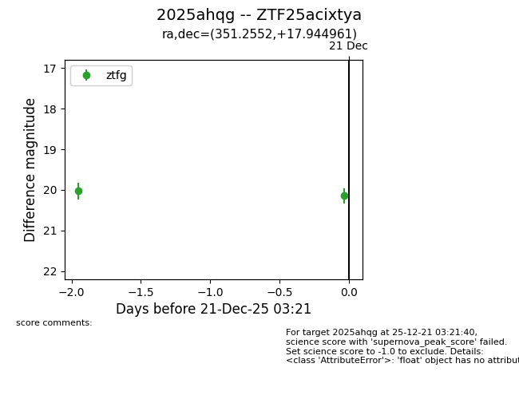
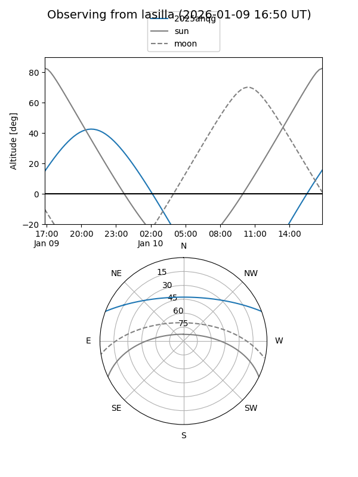
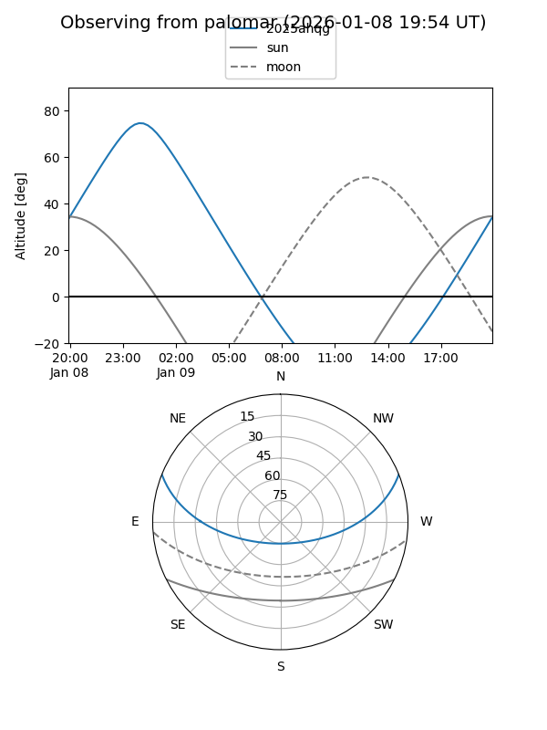

2025ahqg
Target 2025ahqg at 2025-12-31 17:00
Aliases and brokers:
FINK:
Lasair:
ALeRCE:
TNS:
YSE:
alt names
ZTF25acixtya (ztf,fink_ztf)
2025ahqg (tns,yse)
Coordinates:
equatorial (ra, dec) = 351.2552,+17.94496
equatorial (HMS+DMS) = 23:25:01.26,+17:56:41.86
galactic (l, b) = (95.5932,-40.29490)
Flags:
Photometry:
last ztfg=20.14, ztfr=20.00
2 ztfg, 2 ztfr detections
Lightcurve

Visibility


Additional plots